A free, open-source non-linear video editor. Four workspaces share one timeline, so you can go from the first cut to the final render without leaving the window.
Edit, Color, Audio and Deliver each bring up the panels that job needs. Every panel docks, tabs and floats, and every hotkey can be remapped.
Media bin, source and program monitors, the Inspector and the timeline.
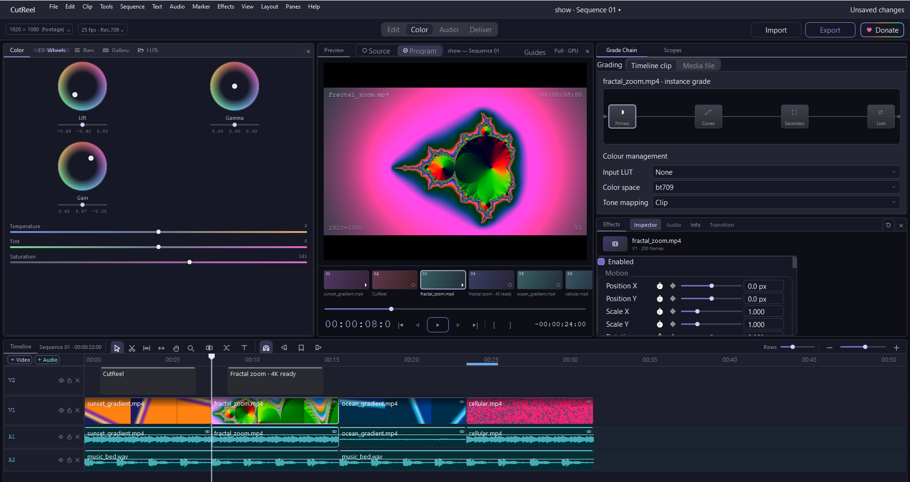
Colour wheels, the grade chain, scopes and a strip of every shot in the cut.
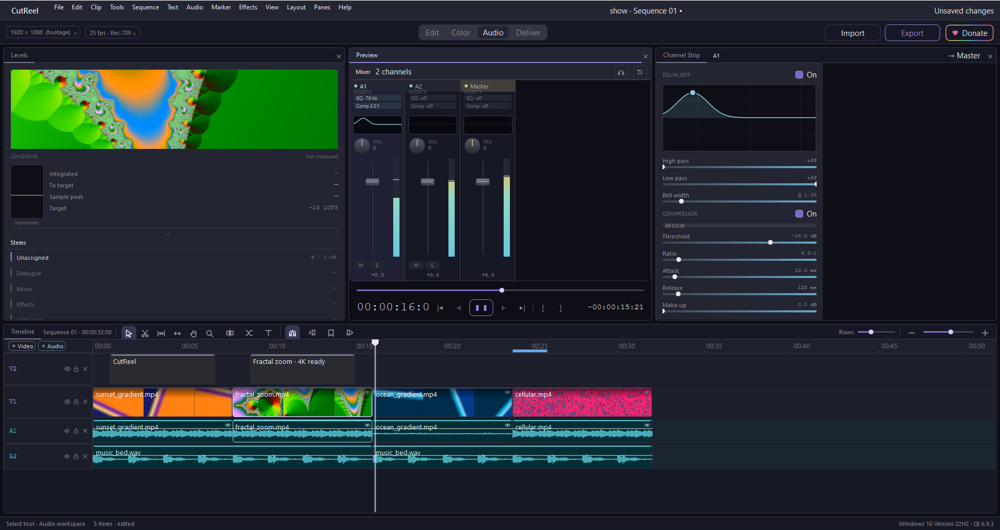
The mixer, loudness meters and stems, captured mid-playback.
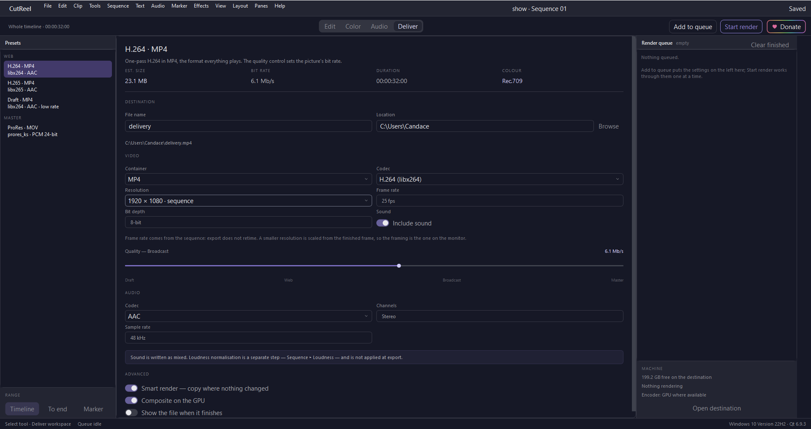
Presets, full encoder settings and a render queue.
Editing
Made for cutting
The basics are fast, and the advanced tools are there when the edit calls for them.
A timeline built for three-point editing
Picture and sound stay linked. Snap guides show where an edit will land, and the blade previews its cut before it makes it.
Select, blade, trim, slip, hand and zoom tools
Sync locks, markers, and waveforms on every audio clip
Multi-select with grouped undo
Nesting, multicam, subclips and match frame
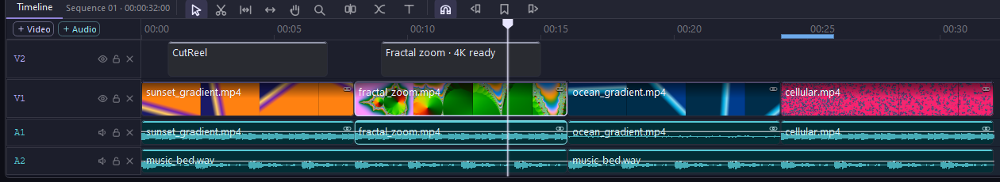
An Inspector that fits the clip
Every parameter has a slider and a value side by side, and you can keyframe all of them. Titles, shapes, adjustment layers and speed changes each get their own controls.
Motion, crop, opacity and blend modes
Auto-reframe for vertical and square cuts, plus stabilise
Speed, reverse, time remap and freeze frame
Shape and Bezier masks, with mask tracking
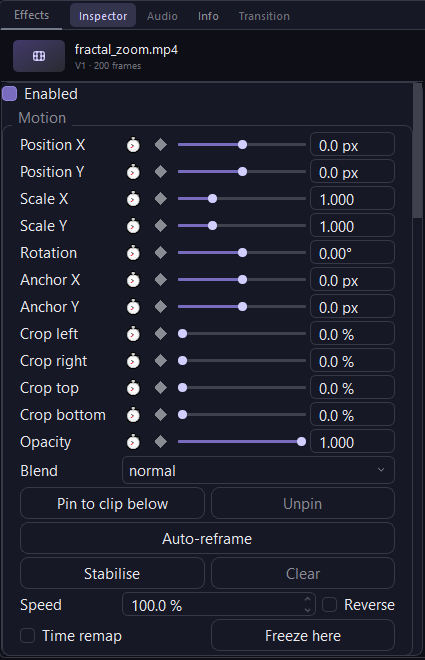
Playback that runs on the GPU
The compositor runs on Direct3D, Metal or Vulkan through Qt RHI. On a 1080p59.94 timeline the playhead stays frame-accurate with no audio dropouts.
Render cache and proxies
Smart rendering copies untouched segments at export
Burn-in and safe-area guides on both monitors
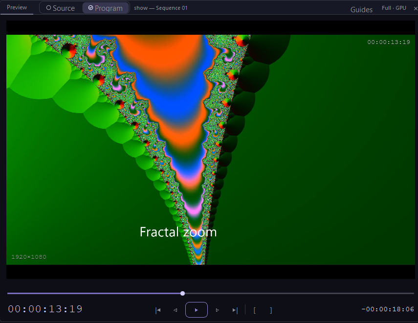
Titles, captions and text-based editing
Add lower thirds and animated titles, or caption the cut from SRT or WebVTT. If you delete words from the transcript, the edit follows.
Fade, slide and type-on animations
Motion graphics templates with responsive timing
Burned-in or sidecar captions
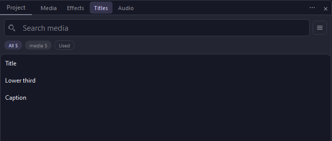
Colour
A grade chain you can read
Primary wheels, curves, secondaries and LUTs are arranged in order, from Primary to Curves to Secondary to Look.
Lift, gamma and gain wheels, plus temperature, tint and saturation
Hue-vs-hue, hue-vs-sat and sat-vs-luma curves
An HSL qualifier with a mask view, and .cube LUTs in and out
Log and HDR footage, wide gamuts and tone mapping
Shot matching, a comparison view and a still gallery
Chroma and luma keys with spill suppression
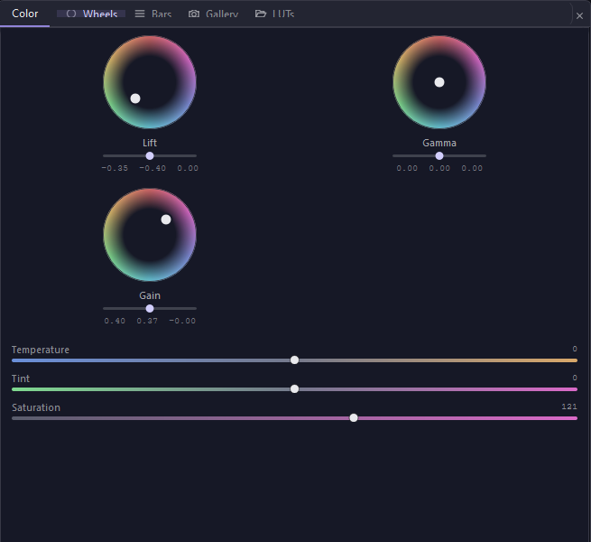
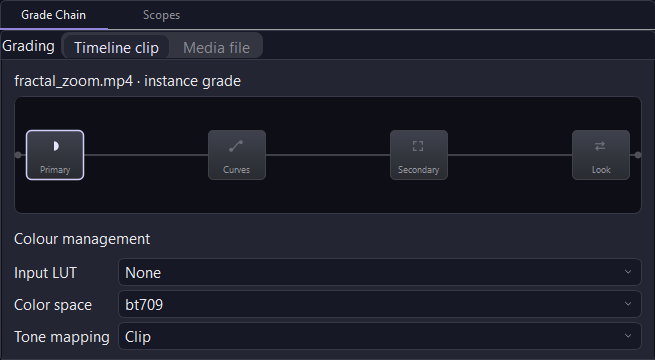
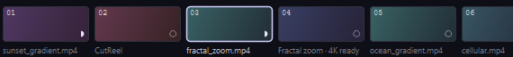
The shot strip lets you jump between clips while you grade.
Scopes
Check the numbers as well as the picture
A waveform, an RGB parade, a vectorscope and a histogram, with peak level, black level and saturation shown as numbers.
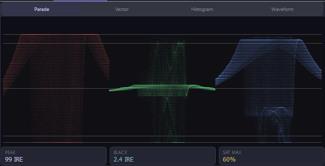
RGB parade
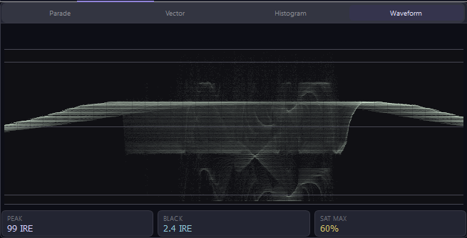
Waveform
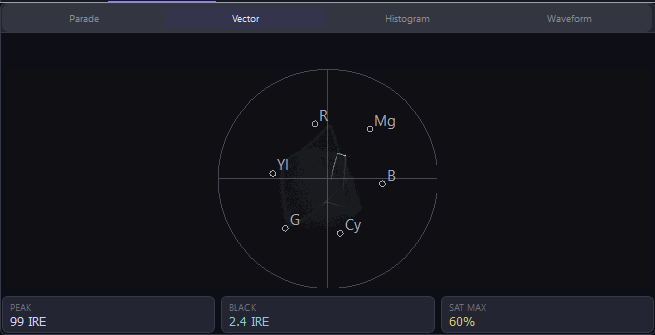
Vectorscope
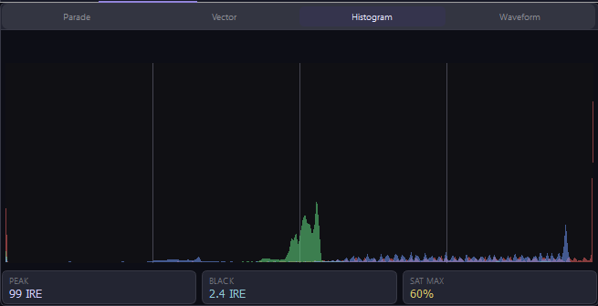
Histogram
Audio
Mix without leaving the edit
Every track gets a channel strip with EQ and compression. Loudness metering and stems are built in.
Pan, faders, mute and solo, with live meters
Parametric EQ and compressor on each track and on each clip
EBU R128 loudness measurement and normalisation
Dialogue, music and effects stems, with auto-ducking
A 5.1-to-stereo fold-down that keeps the dialogue clear
Sync by timecode or by waveform, and music that remixes to fit a length
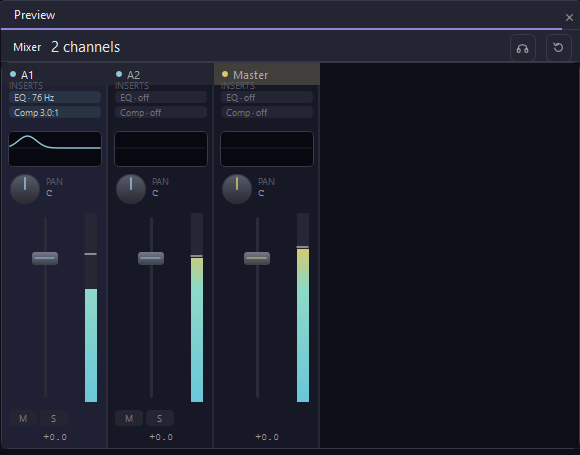
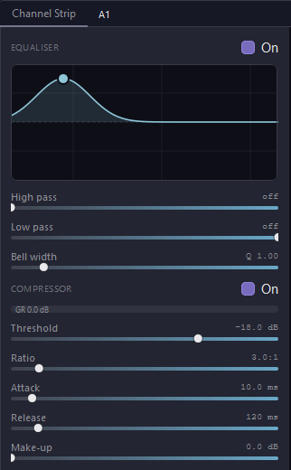
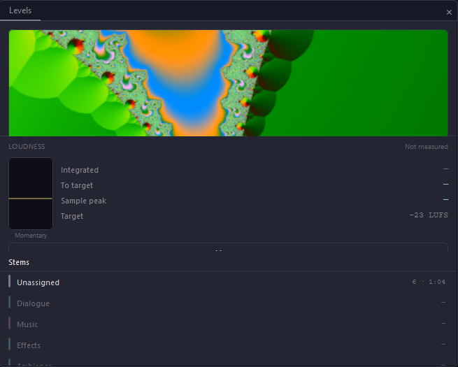
Deliver and manage
From the timeline to a finished file
A Deliver workspace
Pick a preset, adjust the encoder settings, and check the size, bit rate and duration before you render. H.264, H.265 and ProRes are all supported, and graphics can export with alpha.
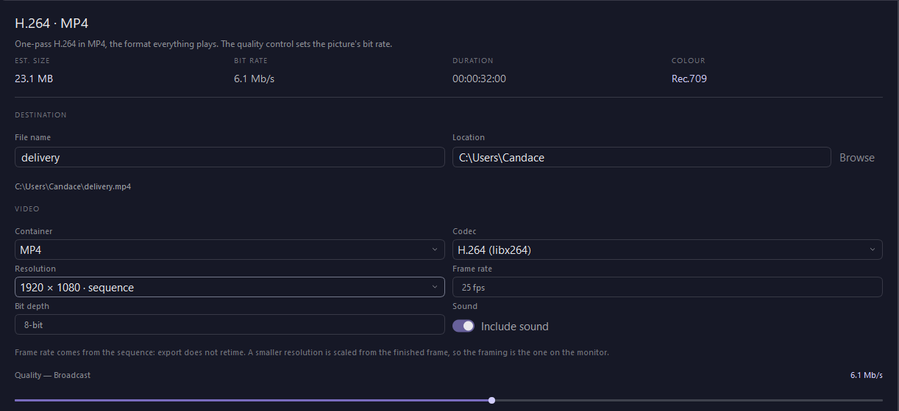
Presets
Common targets are one click away.
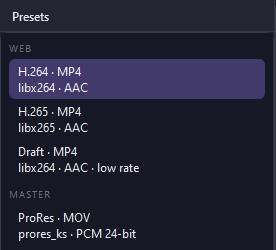
Render queue
Queue several exports and let them run.
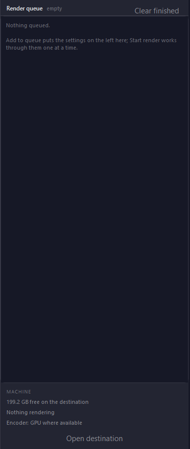
Project management
Autosave, crash recovery and project versions. You can relink, consolidate and transcode on ingest, and share projects with an advisory lock.
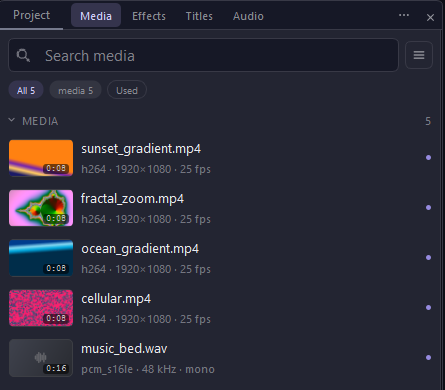
Interchange
Works with other editors
Cuts move both ways between CutReel and other NLEs. Command-line tools handle conversion and batch rendering.
OTIO OpenTimelineIOXML Premiere Pro (FCP7)FCPXML Final Cut ProSRT / VTT Captions